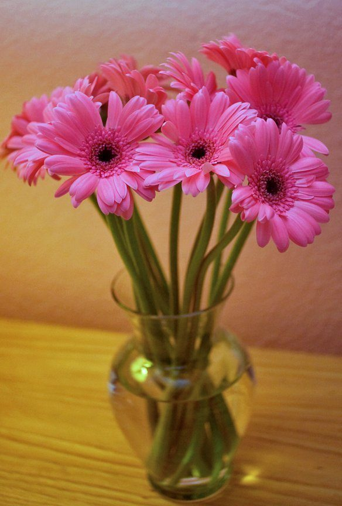
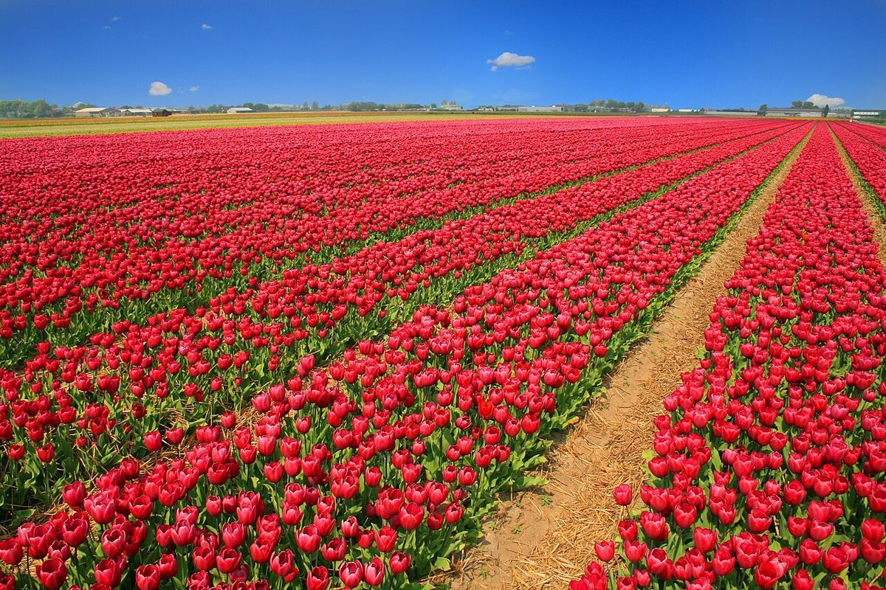
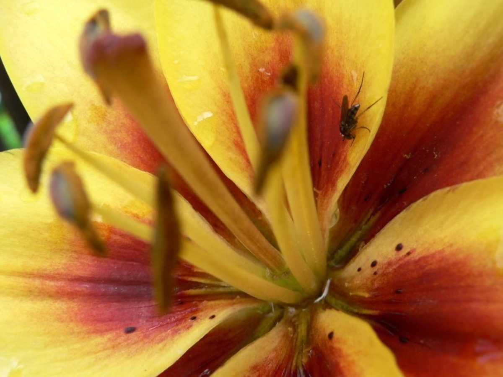
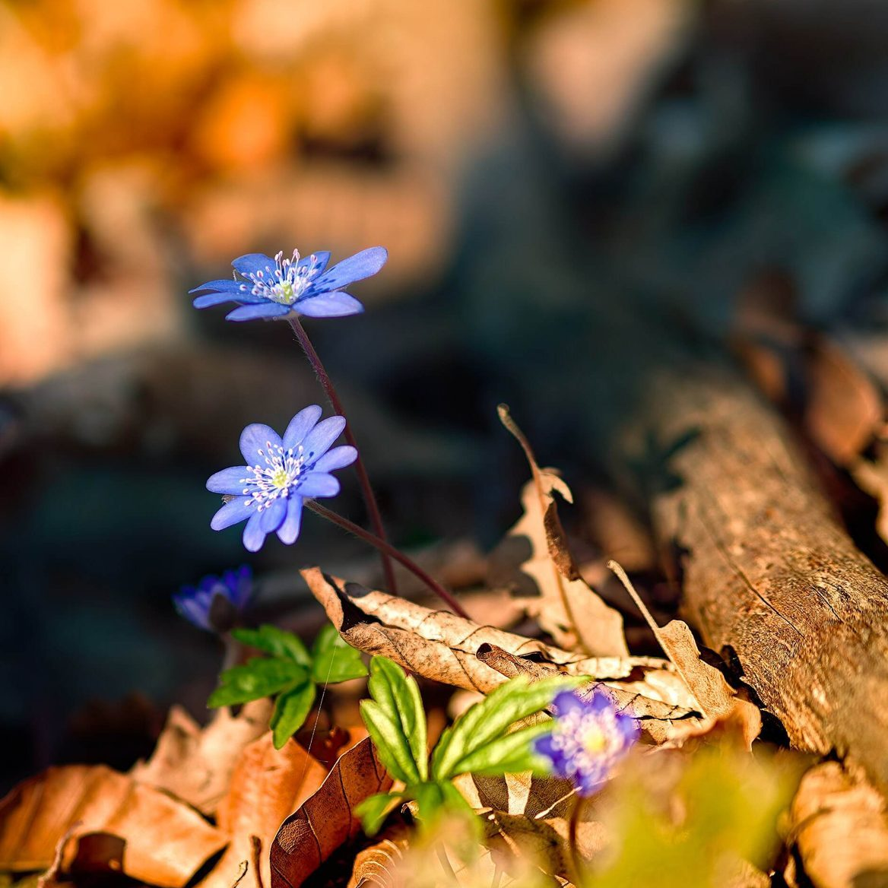

2時 / 店のこと
店のこと
お店について確認できているのは、所在地・電話番号・Instagramのアカウントです。
「想像してみる」の部分は、制作側が想像して書いたものです。お店の実際の様子・考え・メニューとは関係がありません。
確認できていること
- 店名は「花Cafeづん」、業種はカフェ
- 所在地は鹿児島県薩摩川内市百次町350-2(〒895-0007)
- 電話番号は090-9477-0445
- Instagramアカウントは @hanacafe_dun
- 営業時間・定休日・メニュー・価格・ご予約・駐車場は準備中

想像してみる
名前から思い浮かべた花の色
「花Cafe」という名前から、制作側は色とりどりの花を思い浮かべました。実際のお店の姿ではなく、サイトを彩るための想像です。


